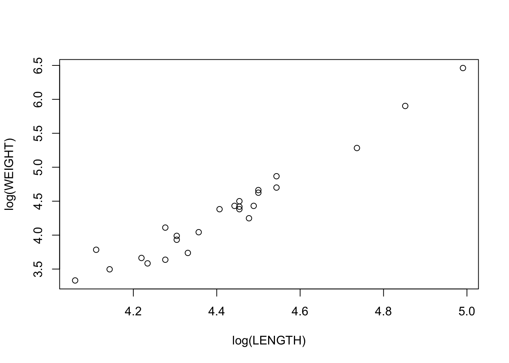
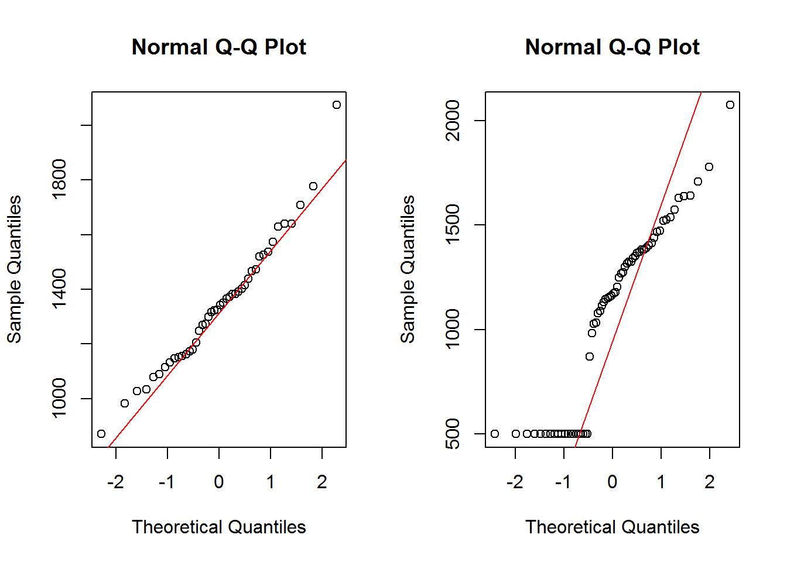

Assignments Week 1
Wouter van Amsterdam
2017-10-23
Last updated: 2017-10-23
Code version: 660b1f3
Day 1
1. Left-handedness, binomial distribution
In a population 10% of the individuals is left-handed. We draw a random sample of 20 people from this population and indicate with X the number of “left-handersâ€. We will calculate the following binomial probabilities with SPSS and R: \(P(X = 0), P(X = 1), P(X < 3), P(X >3)\).
This question regards the binomial distribution, which for a sample of size \(n\), with probability \(p\), is given by
\(P(X=x) = {n \choose x}*p^{x}*(1-p)^{n-x}\)
\(P(X = 0)\) and \(P(X = 1)\) are probabilities for a single value, so density is what we need:
dbinom(x = c(0, 1, 2), size = 20, p = .1)[1] 0.1215767 0.2701703 0.2851798\(P(X < 3)\) and \(P(X > 3)\) concern quantiles:
pbinom(q = 2, size = 20, p = 0.1)[1] 0.6769268pbinom(q = 4, size = 20, p = 0.1, lower.tail = F)[1] 0.04317451-pbinom(q = 4, size = 20, p = 0.1)[1] 0.0431745Note that
pbinom(q = 2, size = 20, p = 0.1)[1] 0.6769268sum(dbinom(x = c(0,1,2), size = 20, p = 0.1))[1] 0.6769268Plot all probabilities
x_seq = 0:20
densities <- dbinom(x = x_seq, size = 20, p = 0.1)
plot(x_seq, densities, ylim = c(0,1))
2. Elevator weight limit
A notice in an elevator states that it can carry up to 16 people, with a total weight of 1240 kg. A random sample of 16 people from a distribution with a mean of 72 kg and a standard deviation of 12 kg gets into the elevator. What is the probability that these people weigh more than 1240 kg?
First calculate the standard deviation of the sum of the weights of 16 people
\(\sigma_{total} = \sqrt{n}*\sigma_{population}\)
n = 16
mu = 72
sigma = 12
sigma_total = sigma * sqrt(n)
sigma_total[1] 48Then calculate the probability of exceeding 1240 kg with 16 people.
pnorm(q = 1240, mean = n * mu, sd = sigma_total, lower.tail = F)[1] 0.03337651See if this matches the results of a simulation
nsim = 10000
set.seed(2)
x <- matrix(rnorm(n = n * nsim, mean = mu, sd = sigma), ncol = nsim)
totals <- colSums(x)
hist(totals)
abline(v = 1240, lty = 2)
1 - ecdf(totals)(1240)[1] 0.03383. Excercises in SPSS
Skipped
4. Excercises in R
In this exercise we will assess whether sample data appear to be normally distributed. Load the library ISwR and open its built-in dataset
rmr:
library(ISwR)
data(rmr)
help(rmr)
- Get some information about the dataset, using
summary(rmr)
summary(rmr) body.weight metabolic.rate
Min. : 43.10 Min. : 870
1st Qu.: 57.20 1st Qu.:1160
Median : 64.90 Median :1334
Mean : 74.88 Mean :1340
3rd Qu.: 88.78 3rd Qu.:1468
Max. :143.30 Max. :2074
- Make a boxplot of the metabolic rate:
boxplot(rmr$metabolic.rate)Does it look symmetric? Are there any (extreme) outliers?
boxplot(rmr$metabolic.rate)
It looks pretty symmetric, with a single large outlier
Make a histogram of the variable
metabolic.rate:
hist(rmr$metabolic.rate, freq=FALSE)
The option
freq=FALSEis used here to indicate that, rather than setting out the frequencies on the vertical axis, the densities (“relative frequenciesâ€) are plotted, which results in a histogram with total area equal to 1. This puts it on the same scale as the curve of the normal distribution that we want to add next. c. A best-fitting normal curve can be added as follows. First store the mean and the standard deviation of height in two variables, for example inmands, then passcurve(dnorm(x,m,s),add=TRUE)
hist(rmr$metabolic.rate, freq=FALSE)
m <- mean(rmr$metabolic.rate)
s <- sd(rmr$metabolic.rate)
curve(dnorm(x,m,s),add=TRUE)
- Does the variable metabolic.rate appear to be normally distributed?
looks pretty normal
- Create a new variable,
lrate, that is the natural logarithm ofmetabolic.rateand repeat parts b) and c) for this new variable.
rmr$lrate = log(rmr$metabolic.rate)
- With which variable would you prefer to work, the original or the transformed one?
The original variable is already pretty normaliy distributed, so transformation is not necessary here, and creates superfluous additional steps for interpretation.
6. Q-Q plot
In this exercise we will build a normal Q-Q plot of the variable
metabolic.ratefrom thermrdataset. It assumes that you have already done the previous exercise and that its resulting objects are still available in the R workspace. a. To get a normal Q-Q plot in R, simply typeqqnorm(rmr$metabolic.rate). To help you judge whether the points are on a straight line you could add the best fitting line to the plot with the commandabline(m,s). (Make sure that m and s are the mean and SD of the original data.) What does this command do, and why does it make sense here?
qqnorm(rmr$metabolic.rate)
abline(m, s, col = "red")
Explanation
This command with abline(.. creates an intercept line which follows \(y = a + b*x\). In the case of the Q-Q plot, on the \(y\)-axis the measured quantity is shown, on the \(x\)-axis the number of standard deviations away from the mean. When the variable is normally distributed, it will follow \(y = \mu + quantile*\sigma\). This corresponds with the plotted ‘abline’ when \(a =\mu\) and \(b = \sigma\). In the Q-Q plot, the actually measured quantities are ordered from low to high. It is expected that most of the measured values will be somewhere around the mean, while only few will be on the extreme ends of the distribution. To be exact, pnorm(x) of the observations are expected to have a value of \(<x\). Conversely, the \(n\) lowest observations are expected at qnorm(p = n / nTotal, mean = mu, sd = sigma), which is equivalent to a \(Z\)-value of qnorm(n / nTotal). Where
\(Z = \frac{x - \mu}{\sigma}\)
So the number of standard deviations away from the mean.
For an illustration of this explanation, read the following code.
- To better understand its meaning, we will build it up ourselves:
s.meta <- sort(rmr$metabolic.rate)
n <- length(rmr$metabolic.rate)
index <- ((1:n)-0.5)/n
q.index <- qnorm(index)We will now plot our own Q-Q plot next to the one from R.
par(mfrow=c(1,2)) #plots two graphs in 1 row and 2 columns, so next to each other
qqnorm(rmr$metabolic.rate)
plot(s.meta~q.index)
par(mfrow=c(1,1)) #back to one graph (so in 1 row and 1 column)Try and explain what each line does, and why this results in the desired Q-Q plot.
- Logarithmically transform the metabolic rate data, and redo part b.
qqnorm(log(rmr$metabolic.rate))
m_log = mean(log(rmr$metabolic.rate))
s_log = sd(log(rmr$metabolic.rate))
abline(m_log, s_log, col = "red")
Not much difference
Adding a few cases on the lower end of the distribution will change the Q-Q plot drastically.
par(mfrow = c(1,2))
qqnorm(rmr$metabolic.rate)
qqline(rmr$metabolic.rate, col = "red")
qqnorm(c(rep(500, 20), rmr$metabolic.rate))
qqline(c(rep(500, 20), rmr$metabolic.rate), col = "red")
par(mfrow = c(1,1))Session information
sessionInfo()R version 3.4.1 (2017-06-30)
Platform: x86_64-w64-mingw32/x64 (64-bit)
Running under: Windows 7 x64 (build 7601) Service Pack 1
Matrix products: default
locale:
[1] LC_COLLATE=Dutch_Netherlands.1252 LC_CTYPE=Dutch_Netherlands.1252
[3] LC_MONETARY=Dutch_Netherlands.1252 LC_NUMERIC=C
[5] LC_TIME=Dutch_Netherlands.1252
attached base packages:
[1] stats graphics grDevices utils datasets methods base
other attached packages:
[1] ISwR_2.0-7
loaded via a namespace (and not attached):
[1] compiler_3.4.1 backports_1.1.0 magrittr_1.5 rprojroot_1.2
[5] tools_3.4.1 htmltools_0.3.6 yaml_2.1.14 Rcpp_0.12.12
[9] stringi_1.1.5 rmarkdown_1.6 knitr_1.17 git2r_0.19.0
[13] stringr_1.2.0 digest_0.6.12 evaluate_0.10.1This R Markdown site was created with workflowr